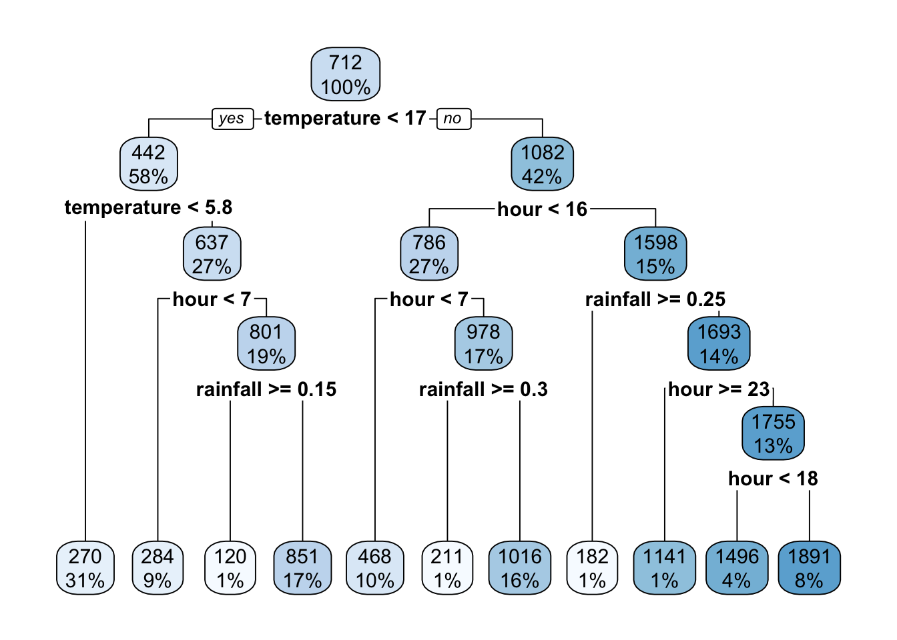

Chapter 21 Using a testing set to evaluate the quality of a model
In this lab activity, we will do the following: - load a dataset - randomly divide the dataset into training and testing data - train a linear model and a regression tree using the training set - compute training error - compute testing error
21.1 Dependencies and setup
We’ll use the following packages in this lab activity:
library(tidyverse)
library(modelr)
library(rpart) # Used to build a regression tree
library(rpart.plot) # Used to visualize treesYou’ll need to install any packages that you don’t already have installed.
21.2 Loading and preprocessing the data
In this lab activity, we’ll be using the Seoul bike dataset from the UCI machine learning repository. This dataset contains the number of public bikes rented at each hour in a Seoul bike sharing system. In addition to the number of bikes, the data contains other variables, including weather and holiday information. Our goal will be to build some simple models that predict the number of bikes rented as a function of other attributes available in the dataset.
# Load data from file (you will need to adjust the file path to run locally)
data <- read_csv("lecture-material/week-08/data/SeoulBikeData.csv")## Rows: 8760 Columns: 14
## ── Column specification ───────────────────────────────────────────────────────────────────────────────────────────────────────────────────────────────────────────
## Delimiter: ","
## chr (4): date, seasons, holiday, functioning_day
## dbl (10): rented_bike_count, hour, temperature, humidity, wind_speed, visibi...
##
## ℹ Use `spec()` to retrieve the full column specification for this data.
## ℹ Specify the column types or set `show_col_types = FALSE` to quiet this message.We can look at the attributes of our data:
colnames(data)## [1] "date" "rented_bike_count" "hour"
## [4] "temperature" "humidity" "wind_speed"
## [7] "visibility" "dew_point_temperature" "solar_radiation"
## [10] "rainfall" "snowfall" "seasons"
## [13] "holiday" "functioning_day"Next, we want to convert categorical attributes into proper factors.
# Convert categorical variables into factors:
data$holiday <- as.factor(data$holiday)
data$functioning_day <- as.factor(data$functioning_day)
data$seasons <- as.factor(data$seasons)21.3 Creating training and testing sets
Next, we want to split our full data set into a training set and a testing set. We’ll use the training set to train/build our models, and then we can use the testing set to evaluate the performance of our model on data unseen during training.
# First assign ID to each row to help us make the split.
data <- data %>%
mutate(id = row_number())
# Size (as a proportion) of our training set.
training_set_size <- 0.5
# Use slice sample create a training set comprising a sample of the rows from
# the full dataset.
training_data <- data %>%
slice_sample(prop = training_set_size)
# The testing set should be all of the rows in data not in the training set
# For this, we can use the 'anti_join' dplyr function
testing_data <- data %>%
anti_join(training_data, by = "id")
# Alternatively, we could have used the filter function to do the same thing
# testing_data <- data %>%
# filter(!(id %in% training_data$id))21.4 Training a simple linear model
Next, we’ll use linear regression to estimate a simple model of rented_bike_count as a function of the temperature, rainfall, and hour attributes.
That is, rented_bike_count will be our response variable, and temperature, rainfall, and hour are our predictor attributes.
Note that I picked these variables somewhat arbitrarily, so I do not necessarily have a strong intuition for whether these are good predictor attributes for this particular problem.
Recall from previous lab activities that we can use the lm function to train a linear model in R.
# Train a linear model of rented_bike_count as a function of the temperature,
# rainfall, and hour attributes.
model_a <- lm(
formula = rented_bike_count ~ temperature + rainfall + hour,
data = training_data
)
summary(model_a)##
## Call:
## lm(formula = rented_bike_count ~ temperature + rainfall + hour,
## data = training_data)
##
## Residuals:
## Min 1Q Median 3Q Max
## -1301.75 -295.08 -37.06 238.84 2164.02
##
## Coefficients:
## Estimate Std. Error t value Pr(>|t|)
## (Intercept) -4.4139 15.4020 -0.287 0.774
## temperature 26.7413 0.6026 44.380 <2e-16 ***
## rainfall -97.7464 6.7536 -14.473 <2e-16 ***
## hour 32.1410 1.0440 30.788 <2e-16 ***
## ---
## Signif. codes: 0 '***' 0.001 '**' 0.01 '*' 0.05 '.' 0.1 ' ' 1
##
## Residual standard error: 475.7 on 4376 degrees of freedom
## Multiple R-squared: 0.435, Adjusted R-squared: 0.4346
## F-statistic: 1123 on 3 and 4376 DF, p-value: < 2.2e-1621.4.1 Computing training and testing error
The summary output for our model already gives a lot of useful information about model’s training error (see the Residual standard error).
We can also calculate the training error manually:
# Use the predict function to get the model's output for each row of the
# training data
mA_training_predictions <- predict(
model_a,
data = training_data
)
# Using the training prediction values, we can compute the mean squared error
# for the model on the training data.
mA_training_MSE <- mean(
(training_data$rented_bike_count - mA_training_predictions)^2
)
mA_training_MSE## [1] 226101.4On it’s own, the mean squared error (MSE) for a model is a bit hard to interpret. We can also compute the root mean squared error (RMSE):
sqrt(mA_training_MSE)## [1] 475.5012which gives us a better idea of the average error in the same units as the response variable (i.e., rented_bike_count).
Next, let’s compute the testing error of our model.
# Use the predict function to get the model's output for each testing example
mA_testing_predictions <- predict(
model_a,
data = testing_data
)
# Compute the mean squared error
mA_testing_MSE <- mean(
(testing_data$rented_bike_count - mA_testing_predictions)^2
)
mA_testing_MSE## [1] 603364.7Once again, we can also compute the root mean squared error (RMSE):
sqrt(mA_testing_MSE)## [1] 776.7656Notice how our testing error is much worse than our training error. This should make some intuitive sense: the testing data is unseen data not used during training. We do generally expect the testing error to be worse than the training error.
21.5 Comparing two models
Next, let’s train a different type of model to predict rented_bike_count as a function of temperature, rainfall, and hour.
For this, we’ll train a regression tree (using the rpart) package.
# Use rpart to train a regression tree using the training data
model_b <- rpart(
formula = rented_bike_count ~ temperature + rainfall + hour,
data = training_data,
parms = list(split="information")
)
summary(model_b)## Call:
## rpart(formula = rented_bike_count ~ temperature + rainfall +
## hour, data = training_data, parms = list(split = "information"))
## n= 4380
##
## CP nsplit rel error xerror xstd
## 1 0.23351646 0 1.0000000 1.0003417 0.02584702
## 2 0.17384714 1 0.7664835 0.7694495 0.02053571
## 3 0.05930483 2 0.5926364 0.5950632 0.01738837
## 4 0.04215271 3 0.5333316 0.5366052 0.01622546
## 5 0.03120140 4 0.4911789 0.4940371 0.01575777
## 6 0.02301328 5 0.4599775 0.4632970 0.01505573
## 7 0.01976036 6 0.4369642 0.4382251 0.01452887
## 8 0.01809277 7 0.4172038 0.4294189 0.01410780
## 9 0.01285181 8 0.3991110 0.4074525 0.01363294
## 10 0.01100669 10 0.3734074 0.3908320 0.01349781
## 11 0.01000000 11 0.3624007 0.3818868 0.01350290
##
## Variable importance
## hour temperature rainfall
## 45 43 13
##
## Node number 1: 4380 observations, complexity param=0.2335165
## mean=694.1598, MSE=400192
## left son=2 (2159 obs) right son=3 (2221 obs)
## Primary splits:
## temperature < 13.05 to the left, improve=0.23351650, (0 missing)
## hour < 6.5 to the left, improve=0.15875800, (0 missing)
## rainfall < 0.05 to the right, improve=0.04764006, (0 missing)
## Surrogate splits:
## hour < 9.5 to the left, agree=0.561, adj=0.109, (0 split)
## rainfall < 0.05 to the left, agree=0.518, adj=0.021, (0 split)
##
## Node number 2: 2159 observations, complexity param=0.0312014
## mean=384.1033, MSE=133459.3
## left son=4 (1091 obs) right son=5 (1068 obs)
## Primary splits:
## temperature < 3.35 to the left, improve=0.18980820, (0 missing)
## hour < 6.5 to the left, improve=0.14188360, (0 missing)
## rainfall < 0.05 to the right, improve=0.02675016, (0 missing)
## Surrogate splits:
## rainfall < 0.45 to the left, agree=0.522, adj=0.034, (0 split)
## hour < 11.5 to the left, agree=0.516, adj=0.021, (0 split)
##
## Node number 3: 2221 observations, complexity param=0.1738471
## mean=995.561, MSE=475184.5
## left son=6 (1414 obs) right son=7 (807 obs)
## Primary splits:
## hour < 15.5 to the left, improve=0.28873480, (0 missing)
## rainfall < 0.05 to the right, improve=0.12792110, (0 missing)
## temperature < 22.05 to the left, improve=0.05378109, (0 missing)
## Surrogate splits:
## temperature < 37.6 to the left, agree=0.638, adj=0.005, (0 split)
## rainfall < 12.25 to the left, agree=0.638, adj=0.005, (0 split)
##
## Node number 4: 1091 observations
## mean=226.6306, MSE=31656.6
##
## Node number 5: 1068 observations, complexity param=0.02301328
## mean=544.9672, MSE=186245.6
## left son=10 (333 obs) right son=11 (735 obs)
## Primary splits:
## hour < 6.5 to the left, improve=0.20279800, (0 missing)
## rainfall < 0.05 to the right, improve=0.06653693, (0 missing)
## temperature < 7.85 to the left, improve=0.03781406, (0 missing)
##
## Node number 6: 1414 observations, complexity param=0.04215271
## mean=715.732, MSE=228609.4
## left son=12 (559 obs) right son=13 (855 obs)
## Primary splits:
## hour < 6.5 to the left, improve=0.22857270, (0 missing)
## rainfall < 0.05 to the right, improve=0.13479760, (0 missing)
## temperature < 18.65 to the left, improve=0.04948892, (0 missing)
## Surrogate splits:
## rainfall < 0.05 to the right, agree=0.609, adj=0.011, (0 split)
##
## Node number 7: 807 observations, complexity param=0.05930483
## mean=1485.869, MSE=529621.8
## left son=14 (63 obs) right son=15 (744 obs)
## Primary splits:
## rainfall < 0.05 to the right, improve=0.24321660, (0 missing)
## temperature < 22.45 to the left, improve=0.09484806, (0 missing)
## hour < 22.5 to the right, improve=0.04018491, (0 missing)
##
## Node number 10: 333 observations
## mean=256.2342, MSE=37242.92
##
## Node number 11: 735 observations
## mean=675.781, MSE=198870.4
##
## Node number 12: 559 observations, complexity param=0.01100669
## mean=433.025, MSE=91432.07
## left son=24 (394 obs) right son=25 (165 obs)
## Primary splits:
## hour < 1.5 to the right, improve=0.37747560, (0 missing)
## rainfall < 0.05 to the right, improve=0.14946030, (0 missing)
## temperature < 18.55 to the left, improve=0.07292333, (0 missing)
## Surrogate splits:
## temperature < 29.85 to the left, agree=0.716, adj=0.036, (0 split)
##
## Node number 13: 855 observations, complexity param=0.01809277
## mean=900.5661, MSE=231878.6
## left son=26 (60 obs) right son=27 (795 obs)
## Primary splits:
## rainfall < 0.05 to the right, improve=0.15996340, (0 missing)
## temperature < 18.65 to the left, improve=0.03847215, (0 missing)
## hour < 8.5 to the right, improve=0.01940289, (0 missing)
##
## Node number 14: 63 observations
## mean=252.4921, MSE=201429.4
##
## Node number 15: 744 observations, complexity param=0.01976036
## mean=1590.308, MSE=417691.9
## left son=30 (245 obs) right son=31 (499 obs)
## Primary splits:
## temperature < 19.95 to the left, improve=0.11145730, (0 missing)
## hour < 22.5 to the right, improve=0.06965805, (0 missing)
##
## Node number 24: 394 observations
## mean=312.802, MSE=40022.63
##
## Node number 25: 165 observations
## mean=720.103, MSE=97264.44
##
## Node number 26: 60 observations
## mean=199.5167, MSE=56081.18
##
## Node number 27: 795 observations
## mean=953.4755, MSE=205254.8
##
## Node number 30: 245 observations
## mean=1282.38, MSE=342938.2
##
## Node number 31: 499 observations, complexity param=0.01285181
## mean=1741.495, MSE=384982.3
## left son=62 (52 obs) right son=63 (447 obs)
## Primary splits:
## hour < 22.5 to the right, improve=0.10084850, (0 missing)
## temperature < 34.05 to the right, improve=0.05742121, (0 missing)
##
## Node number 62: 52 observations
## mean=1163.788, MSE=101956.2
##
## Node number 63: 447 observations, complexity param=0.01285181
## mean=1808.7, MSE=374565.6
## left son=126 (152 obs) right son=127 (295 obs)
## Primary splits:
## hour < 17.5 to the left, improve=0.15338100, (0 missing)
## temperature < 32.75 to the right, improve=0.08687622, (0 missing)
## Surrogate splits:
## temperature < 33.95 to the right, agree=0.698, adj=0.112, (0 split)
##
## Node number 126: 152 observations
## mean=1474.783, MSE=302170
##
## Node number 127: 295 observations
## mean=1980.753, MSE=324814.5We can look at the regression tree visually:
rpart.plot(model_b)
And then we can look more closely at the training error for our regression tree:
# Use the predict function to compute the output of our model for each training
# example
mB_training_predictions <- predict(
model_b,
data = training_data
)
# Compute the mean squared error
mB_training_MSE <- mean(
(training_data$rented_bike_count - mB_training_predictions)^2
)
mB_training_MSE## [1] 145029.9RMSE (for the training data):
sqrt(mB_training_MSE)## [1] 380.8279If you compare the training error for the regression tree to the training error for our linear model, you’ll see that the regression tree has lower training error. But, training error really isn’t a great way to compare the quality of two models. Remember, we often prefer models that we expect to generalize well to unseen data. Comparing each of the two model’s error on the testing set can give us a better idea of which model might generalize better.
To do so, we’ll need to compute the regression tree’s error on the testing set:
mB_testing_predictions <- predict(
model_b,
data = testing_data
)
# Mean squared error
mB_testing_MSE <- mean(
(testing_data$rented_bike_count - mB_testing_predictions)^2
)
mB_testing_MSE## [1] 687454RMSE (for the testing data):
sqrt(mB_testing_MSE)## [1] 829.1285The regression tree’s testing error is much worse than the simple linear model’s testing error, suggesting that the simple linear model might generalize better to unseen data as compared to our regression tree.
21.6 Exercises
- Identify any lines of code that you do not understand. Use the documentation to figure out what is going on.
- We did not use all of the attributes in the bike rental data set to build our models. Are there attributes that we didn’t use that you think would be useful to include in a predictive model?
- Try building a couple of different models using the predictor attributes that you think would be most useful. How do their training/testing errors compare?
- The
modelrpackage has all sorts of useful functions for assessing model quality. Read over themodelrdocumentation: https://modelr.tidyverse.org/. Try using some of the functions to compute different types of training/testing errors for the models we trained in this lab activity. - Think about the structure of the dataset. What kinds of issues might run into when we randomly divide the data into a training and testing set? For example, are we guaranteed to have a good representation of every hour of the day in both our training and testing data if we split the data randomly? What other sampling procedures could we use to perform a training/testing split that might avoid some of these issues?
21.7 References
Dua, D. and Graff, C. (2019). UCI Machine Learning Repository http://archive.ics.uci.edu/ml. Irvine, CA: University of California, School of Information and Computer Science.